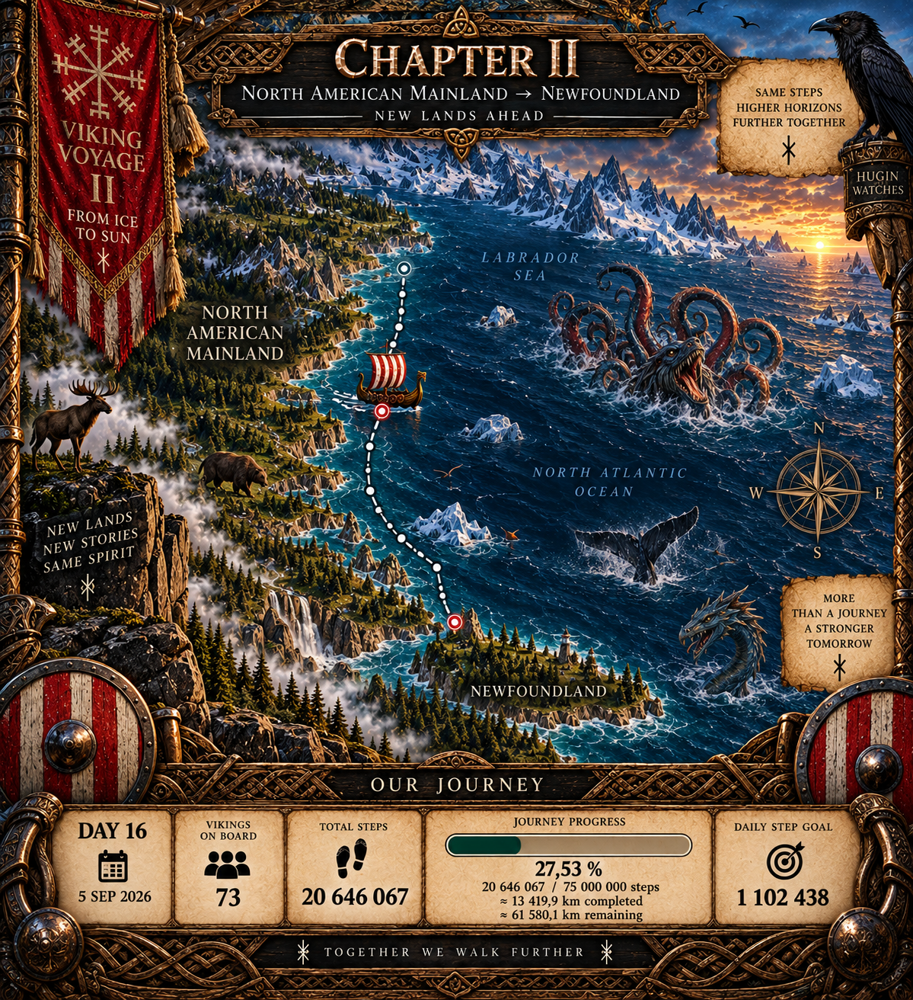

THE VOYAGE ARCHIVE · THE CAPTAIN'S LOG
DAY 16
Chapter II began as the fleet turned south from the North American mainland toward Newfoundland.

CAPTAIN'S LOG · DAY 16
CHAPTER II HAS BEGUN.
Seventy-three Vikings carried the fleet to 20,646,067 steps — approximately 13,419.9 kilometres from Greenland.
Since reaching the North American mainland, the crew had added 1,490,589 steps — nearly 969 kilometres. The bow had turned south and Newfoundland was the next destination.
THE DESTINATION IS ON THE MAP.
THE STORY OF HOW WE REACH IT IS NOT.
— Captain Hákon
DAY 16 RECORD
THE NEXT CHAPTER OPENS
Chapter I remained frozen behind the fleet. Day 16 opened Chapter II: North American Mainland → Newfoundland.